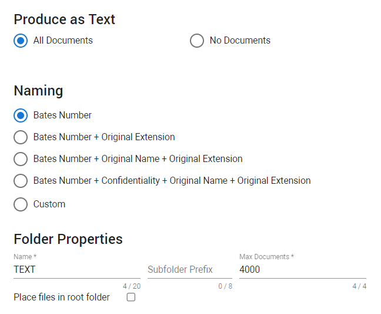
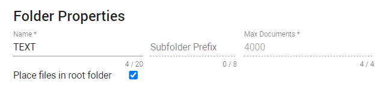

Step four of the production wizard. This is where you define if and how documents are produced as text.
In the Document List, select the settings icon
Then, select Productions > Create for Selection/Documents. For more information on starting a production, see Productions.

Produce as Text
Note: Redacted documents will not be produced as text.
All documents added to this production, will be produced as text.
No documents added to this production, will be produced as text.

Naming
Define how you want to name your text files. The first three options are most commonly used.
Folder Properties
Define where you want to store your text files.
Select Place files in root folder to place the files in the root folder of the corresponding file type. When enabled, the text files are not placed in subfolders, but in the same text folder. 
The name of the folder in which the text files will be saved.
The subfolder prefix will always be followed by a number.
Define the maximum number of documents allowed in a folder.